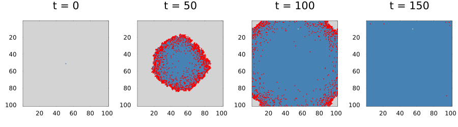
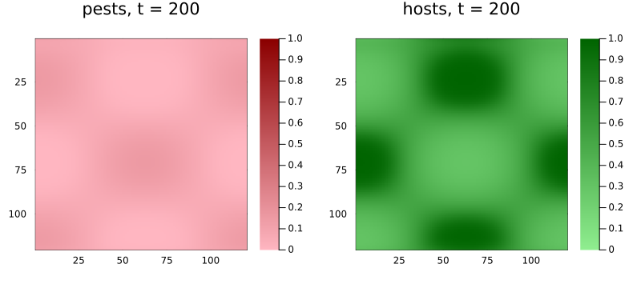
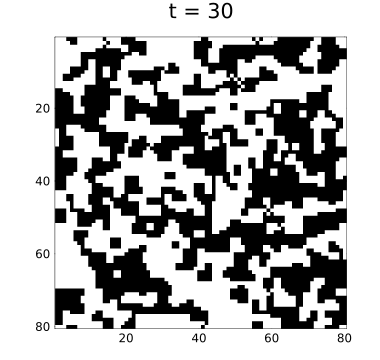

Models and problems
Simon Frost
Overview
So far each vignette built a rule and an initial state by hand and passed them to CAProblem. For models that are reused, shared and varied, it is clearer to declare them once, in the style of ModelingToolkit: name the state variables with their defaults and allowed values, name the parameters with their defaults, and write the rule using those names. A CAModel is that declaration; CAProblem(model, u0map, tspan, pmap; space) turns it into a problem by mapping names to values, as ModelingToolkit’s ODEProblem(sys, u0map, tspan, pmap) does.
ENV["GKSwstype"] = "100"
using CellularAutomataCore
using PlotsDeclaring a model
@camodel reads a block of declarations. Inside @rule, cell is the cell’s state, nbrs its neighbours’ states, ctx its context, and every parameter is available by name.
sir = @camodel SIR begin
@description "Lattice SIR epidemic with per-contact infection"
@states state::Symbol = :S ∈ (:S, :I, :R)
@parameters β = 0.3 γ = 0.1
@neighbourhood VonNeumann(1)
@rule begin
if cell == :S
bernoulli(ctx, 1 - (1 - β)^count(==(:I), nbrs), 1) ? :I : :S
elseif cell == :I
bernoulli(ctx, γ, 2) ? :R : :I
else
cell
end
end
endCAModel SIR
Lattice SIR epidemic with per-contact infection
states:
state::Symbol = :S ∈ (:S, :I, :R)
parameters:
β = 0.3
γ = 0.1
rule: LocalRule(<anonymous function>, VonNeumann(1))The model knows its states, parameters and defaults:
[s.name for s in states(sir)], defaults(sir)([:state], (β = 0.3, γ = 0.1))From model to problem
u0map gives each state variable a value for every cell, an array, or a function of the cell’s index; variables it leaves out take their defaults. pmap overrides parameter defaults. Values outside a state’s domain, and names the model does not have, are rejected.
centre(I) = I == CartesianIndex(51, 51) ? :I : :S
prob = CAProblem(sir, (state=centre,), 150, (β=0.5,); space=Torus(101, 101), seed=1)
prob.p(β = 0.5, γ = 0.1)code(s) = s == :S ? 0 : s == :I ? 1 : 2
sol = solve(prob; saveat=50)
plot([plot(Torus(101, 101), code.(u); c=[:lightgrey, :red, :steelblue], colorbar=false,
title="t = $t") for (t, u) in zip(sol.t, sol.u)]...; layout=(1, 4), size=(900, 250))
try
CAProblem(sir, (state=:Z,), 10; space=Torus(5, 5))
catch e
println(sprint(showerror, e))
endInvalidStateError in model SIR: cell CartesianIndex(1, 1) has value :Z; state state must lie in (:S, :I, :R)Because a problem is ordinary, everything else applies unchanged: backends, update schemes, callbacks, remake and ensembles.
ens = solve(EnsembleProblem(prob; output_func=(sol, ctx) -> (count(==(:R), final_state(sol)), false)),
Synchronous(), EnsembleThreads(); trajectories=8, save_everystep=false)
ens.u8-element Vector{Int64}:
10191
1
10197
10193
10194
10192
10195
10191Several state variables
A model with more than one state variable has a layered state: each cell is a NamedTuple, and so is the rule’s result. Here a host plant and a pest, with pests dispersing by a kernel field and growing according to a suitability covariate that every problem must supply:
hostpest = @camodel HostPest begin
@description "Pests disperse by a Gaussian kernel and grow on healthy hosts"
@states host::Float64 = 1.0 pest::Float64 = 0.0
@parameters r = 0.8 m = 0.2 damage = 0.3 recovery = 0.02
@fields spores = KernelField(GaussianKernel(2.0), c -> c.pest)
@covariates suitability
@rule begin
growth = r * covariate(ctx, :suitability) * cell.host
pest = clamp(0.5 * cell.pest + 0.5 * field(ctx, :spores) +
growth * cell.pest * (1 - cell.pest) - m * cell.pest, 0.0, 1.0)
host = clamp(cell.host + recovery * (1 - cell.host) - damage * pest * cell.host, 0.0, 1.0)
(host=host, pest=pest)
end
endCAModel HostPest
Pests disperse by a Gaussian kernel and grow on healthy hosts
states:
host::Float64 = 1.0
pest::Float64 = 0.0
parameters:
r = 0.8
m = 0.2
damage = 0.3
recovery = 0.02
fields: spores
covariates: suitability
rule: LocalRule(<anonymous function>)n = 120
suitability = [0.5 + 0.5 * sin(i / 15) * cos(j / 20) for i in 1:n, j in 1:n]
start = (pest=I -> I == CartesianIndex(60, 60) ? 0.5 : 0.0,)
p = CAProblem(hostpest, start, 200; space=Torus(n, n), covariates=(suitability=suitability,),
seed=2)
sol = solve(p; saveat=100)
plot(plot(sol; layer=:pest, c=:reds, clims=(0, 1), title="pests, t = 200"),
plot(sol; layer=:host, c=:greens, clims=(0, 1), title="hosts, t = 200");
layout=(1, 2), size=(800, 360))
Without the macro
@camodel is a convenience over the CAModel constructor, which takes a rule and the declarations as keywords:
majority = CAModel(LocalRule(VonNeumann(1)) do cell, nbrs, ctx
cell + sum(nbrs) >= 3 ? one(cell) : zero(cell)
end;
name=:Majority, states=[StateVariable(:opinion, Int8(0); domain=(0, 1))])
p = CAProblem(majority, (opinion=rand(Int8[0, 1], 80, 80),), 30; space=Torus(80, 80))
plot(solve(p; save_everystep=false); c=:binary, colorbar=false, size=(380, 360))
Models are the unit that CategoricalCellularAutomata.jl composes: products of models become layered states, and models sharing a state variable can be glued together.